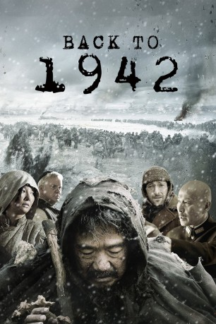

#5542 Empire of War - Der letzte Widerstand
 
 IMDB-Wertung: 6.9 / 10
IMDB-Wertung: 6.9 / 10  Metascore: 0
Metascore: 0 
Im China der frühen 40er Jahre des 20. Jahrhunderts haben die Soldaten Japans weite Teile des Landes besetzt, in den übrigen grassiert eine verheerende Hungersnot, destabilisieren Flüchtlingsheere und Räuberbanden die ohnehin brüchige Zivilisation. Während die Heerführer und Politiker aller Seiten wenig Interesse am Schicksal des gebeutelten Volkes zeigen, versucht der Kaufmann Fan mit seiner entwurzelten Familie einfach nur im Getümmel zu überleben. Doch sein Weg führt stets vom Regen in die Traufe.
Jahr: 2012
Dauer: 146 Minuten
FSK: 16
Land: China Studio: Koch MediaTonspuren:
Untertitel: Deutsch,
Auflösung: 1080p (1920x808) Größe: 8448 MB
Genre: Drama
Regisseur: Xiaogang Feng
Drehbuch: Victor Fresco
Soundtrack:
Darsteller:
- Guoli Zhang als Master Fan Dianyuan
 Hanyu Zhang als Brother Sim
Hanyu Zhang als Brother Sim- Wei Fan als Lao Ma
- Fan Xu als Hua Zhi
- Daoming Chen als Chiang Kai-shek
- Xuejian Li als Li Peiji
- Mo Zhang als Shuan Zhu
- Lan Ke als Soong May-ling
- Yongjian Lin als County Magistrate
 Tim Robbins als Bishop Megan
Tim Robbins als Bishop Megan Adrien Brody als Theodore Harold White
Adrien Brody als Theodore Harold White Zhong Lü als Zhang Fang's mother
Zhong Lü als Zhang Fang's mother- Alec Su als T. V. Soong, aka Soong Tse-ven
- Alfred Hsing als Refugee , uncredited
- Yuanzheng Feng als Xia Lu
- Jingyi Yao als Lingdang
- Jiale Peng als Liubao
- Qian Li als Master Fan's Daughter-in-Law
- Huifang Yuan als Master Fan's Wife
- Shaohua Zhang als Xia Lu's Mother
- Ziwen Wang als Xing Xing
- Yi Zhao als Master Fan's Son
- Shu Zhang als Dong Jiayao
- Xiaojie Tian als Officer
- Guoqiang Zhang als Guo Jiquao
- Zhen Yu als Jiang Dingwen
- Morning Chang als Chang / Tao-fan
- Yihong Duan als Chen Bulei
- Nathaniel Boyd als American Embassy Translator
- Chun Du als
- Xu Guangyu als Train station owner
- Zhenyu Qiao als Secretary Han
- Jiahui Yang als Orphan girl
Datei: X:\HD-Eastern-Modern(A-M)\Empire of War - Der letzte Widerstand (2012, FSK16, 1920x808).mkv seit 15.02.2017
Festplatte: HD Eastern+Western
 Es gibt insgesamt 104 Filme in der Gruppe 'HD-Eastern-Modern(A-M)'
Es gibt insgesamt 104 Filme in der Gruppe 'HD-Eastern-Modern(A-M)'